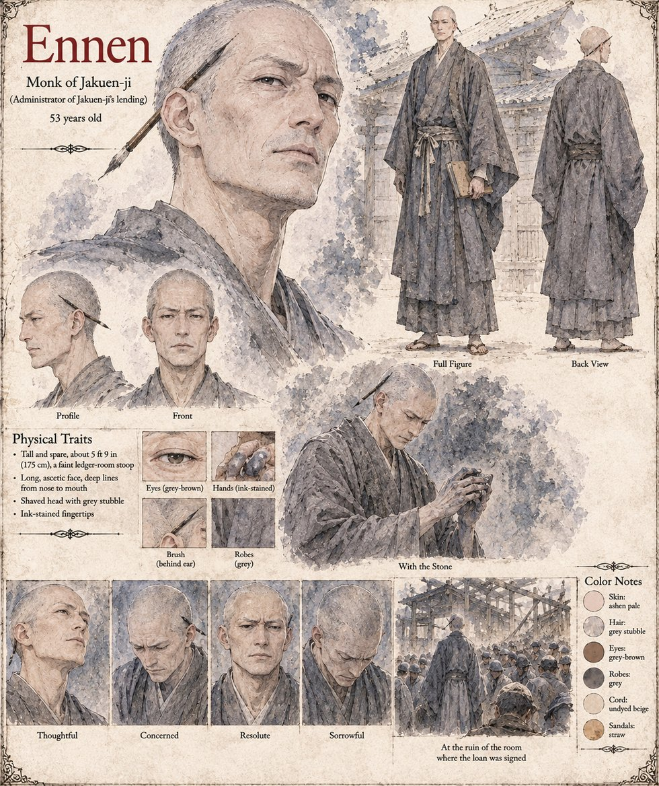

Ennen
Monk of Jakuen-ji · administrator of Jakuen-ji’s lending · the stone’s second holder · 53 by his sheet
The monk who administers Jakuen-ji’s lending, and who runs it the way a physician gives bitter medicine: with real care for the outcome and a real willingness to cause pain in service of it. In eleven years he has made exactly four exceptions and could not have told you why. The temple’s understanding of mercy is given in the line quoted below. He receives Norimasa’s loan arrangement for the eastern tenants, and when Sadatomo’s gift bundle reaches him with the stone inside it, his four old exceptions vanish.
He presides over the clause that takes Chiyo and Kiyo into service, which also takes Genzo’s eldest son. He is the one who meets the crowd at the ruin of the room where the loan was signed (Part Three, The Debt Papers Burn First), and the stone is later found on his body by Isamu, who keeps it wrapped in undyed cloth for the rest of his life.
The manuscript gives his grey robes and ink-stained hands; the rest of the sheet is the pack’s. It draws him tall and spare at about 5 ft 9 in with a faint ledger-room stoop, a long ascetic face with a high forehead and deep lines from nose to mouth, a shaved head with grey stubble, steady grey-brown eyes, an ashen-pale complexion, plain grey robes with an undyed cord for a sash, straw sandals and a worn ledger brush tucked behind the ear. Its panels are Thoughtful, Concerned, Resolute and Sorrowful, and its scenes show him bent over the stone in his ink-stained hands, captioned With the Stone, and standing with his back to the viewer before a packed crowd at the ruin of the room where the loan was signed.
“Mercy, in Jakuen-ji’s understanding, was not the cancellation of what was owed. It was the discipline of making sure it was paid.”